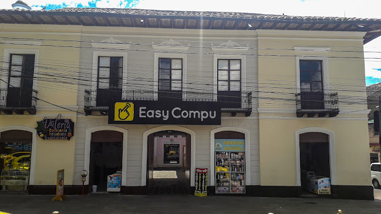

Experiencias Laborales
Nombre: Leydi Sánchez
Curso: 3ro de Bachillerato Técnico "A"
Mi Experiencia En Easy Compu

Para iniciar mi primera semana llegué a las 8:30 hora que me indicaron que sería mi ingreso,
de Malchinguí tuve que salir en el bus de las 7:00 llegué a la empresa y
tuve que ponerme a las órdenes del gerente porque el técnico aún no llegaba
y en el transcurso de esperar que llegara, con el gerente y un trabajador armamos
un CPU e hicimos la revisión de discos y memorías ,a la llegada del técnico el gerente me
presentó y me dijo que podía preguntarle cualquier cosa si lo necesitaba también dijo que
le podía tratar por su nombre el cual era Kevin, ya llegaba la hora de mi salida que era a
las 4:30 de la tarde.
Para empezar la segunda semana, se presentó un problema en el país por el cual se retrasaron
las prácticas laborales y nos dijeron que deberíamos volver a empezar desde la próxima semana
A la semana que volvimos a ingresar se integraron pasantes de otras instituciones y
de intitutos, nosotros eramos ayudantes del técnico y también recibíamos órdenes de trabajadores como:
Santiago,Ariana y Kimberli en esa semana prácticamos el mantenimiento de portátiles y logramos tratar
errores de impresoras.
Al comenza la tercera semana me cambié de local por órdenes del gerente ya que necesitaba ayuda
para un inventario de nueva mercadería, ya que era un local próximo abrir, aquí tuve la oportunidad de conocer a una
chica muy amable que se llamaba Pamela, me explicó cada paso para poder realizar el
inventario con códigos y nombres, tuve que trabajar un sábado y a cambio me darían un día
libre cuando yo lo necesite.
En la última semana me dediqué, a ayudar en el área de mantenimiento donde trabajaba con
los demás pasantes que se llamaban Dencel ,Alex y Cecilia, estabamos a las órdenes cuando nos
requerían para un trabajo, un día antes de regresar a la institución me hicieron la visita y al próximo día
me despedí de mis compañeros de trabajo.